Guia do cliente · Área do Cliente
Tudo o que precisa de saber para acompanhar o seu trabalho na Área do Cliente da GeniusFrela: como entrar, o que significa cada ecrã e o que fazer em cada fase, do briefing aos ajustes.
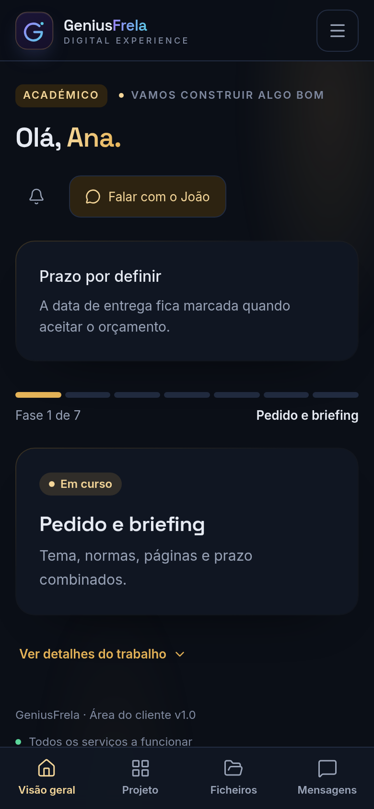
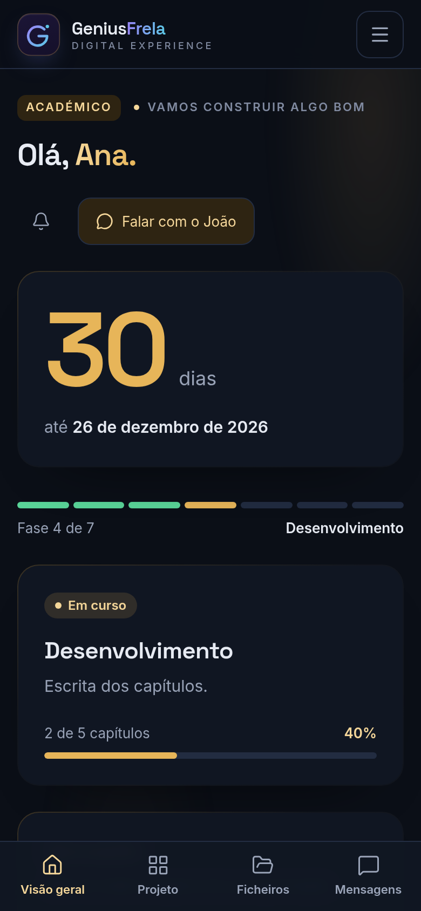
Neste guia
01 · Como ler o portal
É o primeiro ecrã depois de entrar. Responde a três perguntas: quanto tempo falta, onde está o trabalho e se há algo para si.
01 · Como ler o portal
02 · As 7 fases
| Fase | O que acontece | O que faz | Quem | |
|---|---|---|---|---|
| 1 | Pedido e briefing | Combinamos o tema, as normas, as páginas e o prazo. | Envia o enunciado e as referências em Ficheiros. | Você |
| 2 | Orçamento e aceite | Recebe o valor, o sinal e a data de entrega. | Aceita o orçamento e paga o sinal (50%). | Você |
| 3 | Estrutura (índice) | Propomos o índice do trabalho. | Aprova o índice ou pede alterações. | Você |
| 4 | Desenvolvimento | Escrevemos capítulo a capítulo. | Acompanha "X de Y capítulos". Nada a fazer. | GeniusFrela |
| 5 | Revisão e formatação | Revemos o texto e aplicamos as normas. | Pode enviar ficheiros, se for preciso. | GeniusFrela |
| 6 | Entrega final | Os ficheiros finais (PDF e Word) ficam no portal. | Paga o restante e descarrega. | Você |
| 7 | Ajustes | Durante 7 dias pode pedir pequenas correções. | Pede o ajuste no portal, se precisar. | Você |
03 · Entrar no portal
Não precisa de criar conta nem de decorar senhas. Enviamos-lhe um link pessoal pelo WhatsApp.
O link é só seu, funciona uma vez e vale 24 horas. Se pedirmos um link novo, o anterior deixa de funcionar. Não o reencaminhe a ninguém.
Já foi usado ou passou das 24 horas. Toque em "Pedir um link novo no WhatsApp" e enviamos-lhe outro.
Se lhe demos uma senha, entre em joao-pereira.dev/cliente/login com o seu email. No primeiro acesso pede-lhe para escolher uma senha nova.
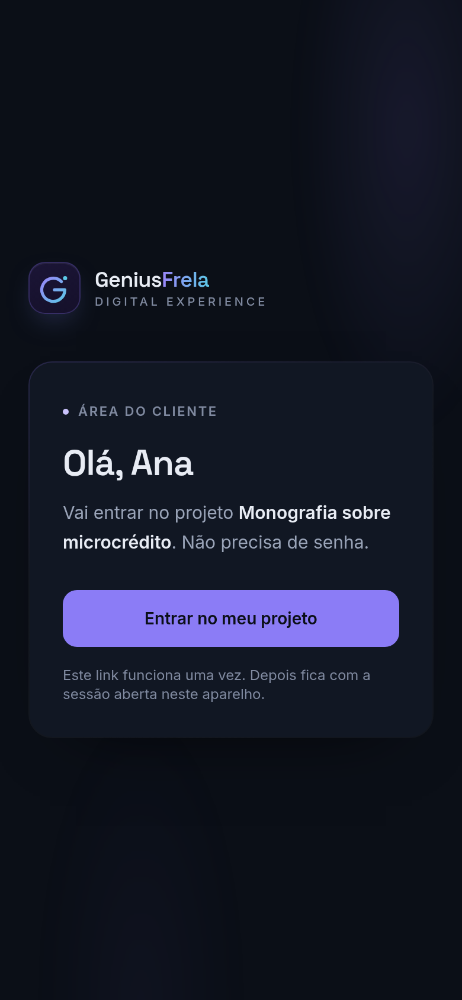
O link do WhatsApp
Email e senha (alternativa)
04 · Briefing
Depois da conversa inicial, registamos a ficha do trabalho. Enquanto não há orçamento aceite, a contagem diz "Prazo por definir".
Fase 1 de 7 · Pedido e briefing
No fim da Visão geral, toque em "Ver detalhes do trabalho": tema, tipo, nível, instituição, normas e número de páginas. Se algo estiver errado, diga-nos nas Mensagens.
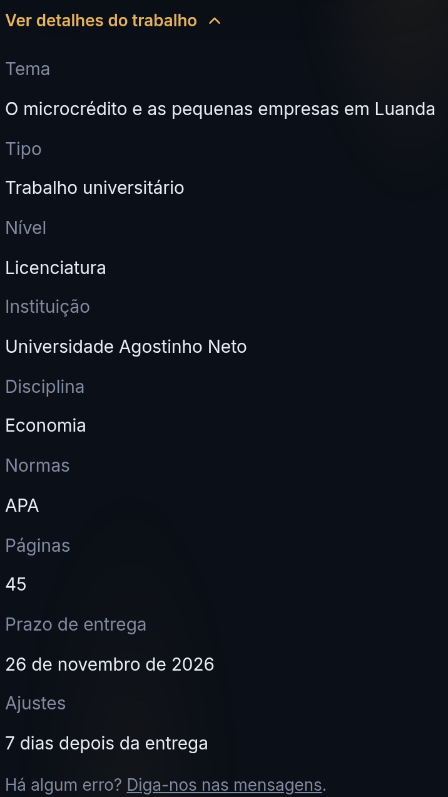
Em Ficheiros → Enviar referências, escolha os ficheiros e toque em "Enviar". Pode enviar no briefing e na revisão.
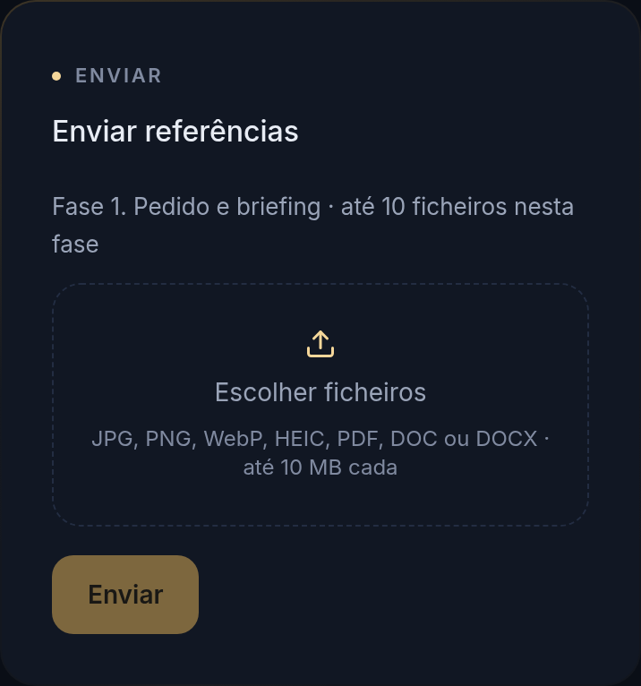
Formatos: JPG, PNG, WebP, HEIC, PDF, DOC e DOCX.
Limites: até 10 MB por ficheiro e 10 ficheiros por fase. Um ficheiro maior é recusado antes de ser enviado.
05 · Aceitar o orçamento
Quando o orçamento estiver pronto, aparece um cartão na Visão geral, em Aprovações. A fase fica "a aguardar a sua resposta".
O sinal não é devolvido se desistir depois de pagar, porque cobre o trabalho já começado. Se quiser mudar alguma coisa no orçamento, toque em "Pedir alterações" em vez de aceitar.
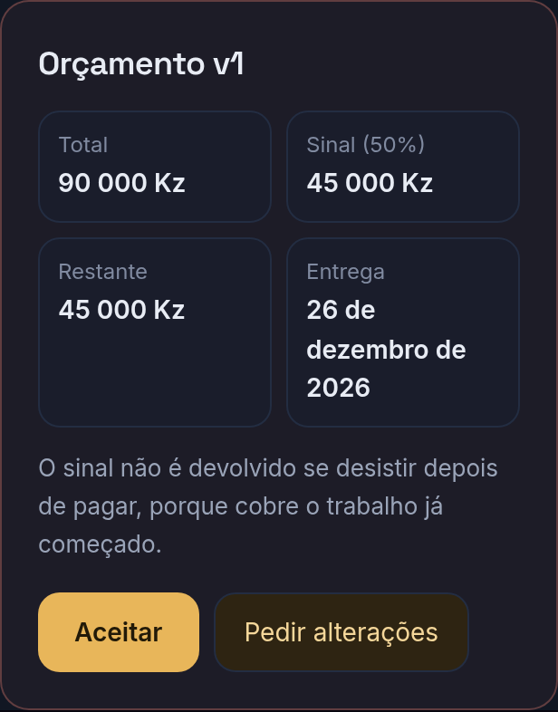
O cartão do orçamento, na Visão geral
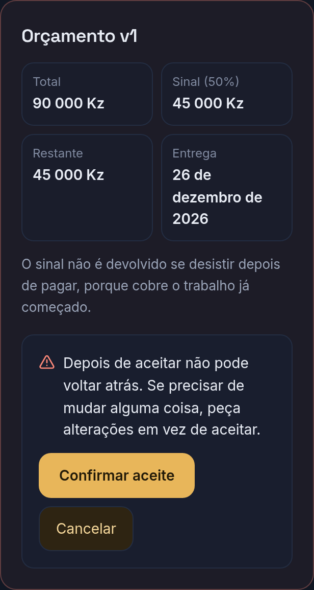
Depois de tocar em "Aceitar": confirmar
06 · Pagar o sinal e os pagamentos
Depois do aceite, a contagem começa e o próximo passo passa a ser "Pagar o sinal". A fase seguinte só arranca depois de o pagamento estar registado.
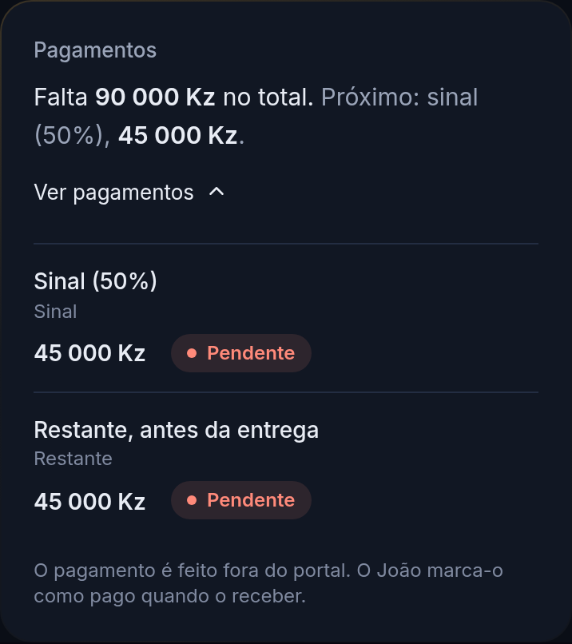
O sinal (50%) e o restante, que se paga antes da entrega final.
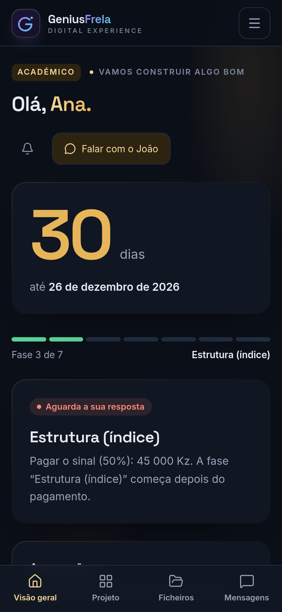
"Pagar o sinal" no próximo passo
07 · Aprovar o índice
Propomos o índice com os capítulos. Pode aprová-lo como está ou pedir alterações, as vezes que forem precisas.
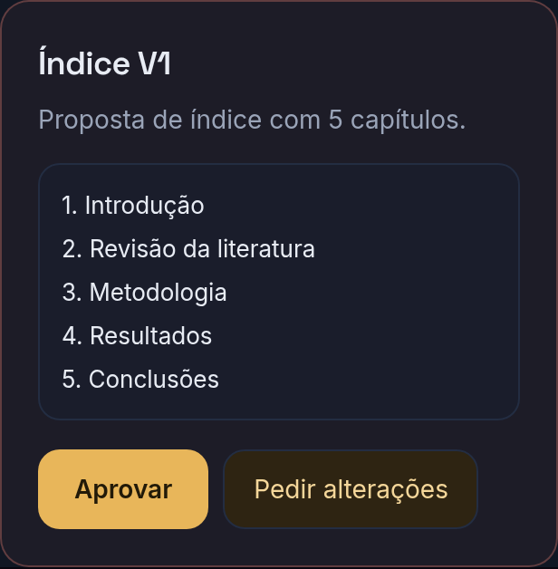
O índice proposto
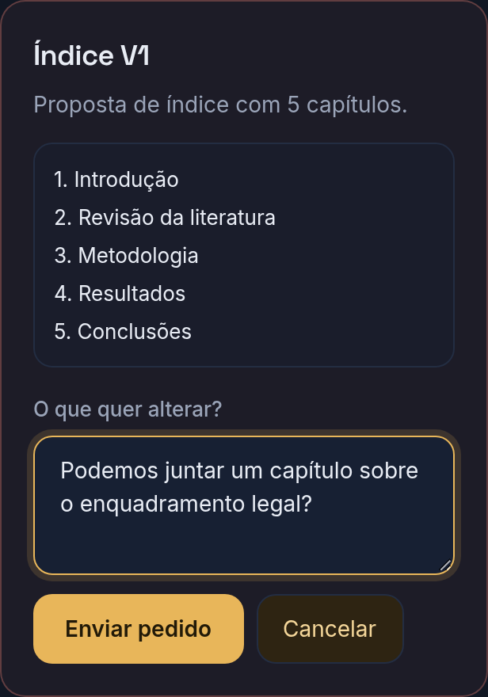
Pedir alterações
Quer mudar algo? Toque em "Pedir alterações", escreva o que quer mudar (o comentário é obrigatório) e "Enviar pedido". Recebe uma versão nova (V2) para aprovar.
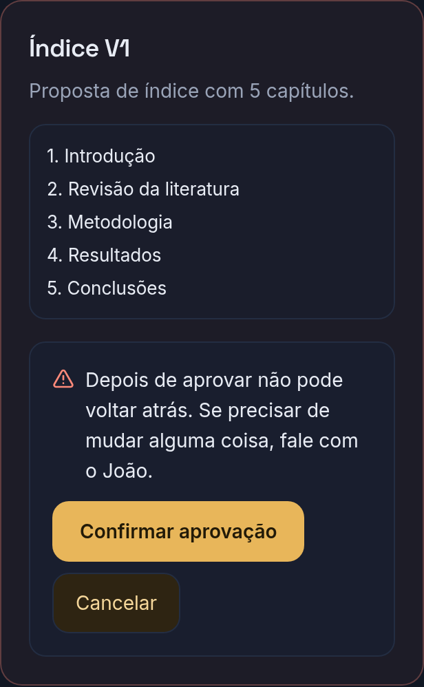
Aprovar e confirmar
Está tudo bem? Toque em "Aprovar" e depois em "Confirmar aprovação". A fase Estrutura fecha e começamos a escrever.
08 · Acompanhar os capítulos
Nesta fase não precisa de fazer nada. O próximo passo mostra quantos capítulos estão prontos; a página Projeto mostra cada um.
"2 de 5 capítulos" · 40%
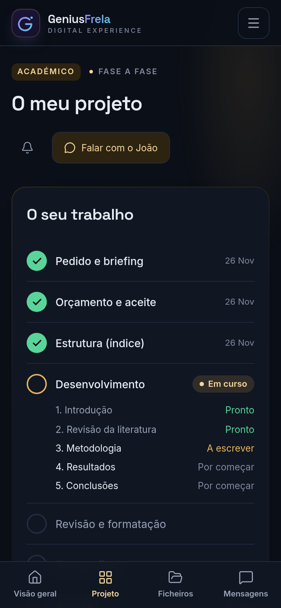
Projeto: as fases e os capítulos
As 7 fases de cima para baixo, com a data em que cada uma terminou. Na fase em curso, a lista dos capítulos:
O portal mostra o título e o estado de cada capítulo; o texto completo chega na entrega final.
Revemos o texto e aplicamos as normas da ficha. Se tiver material novo, pode enviá-lo em Ficheiros nesta fase.
09 · Receber a entrega final
Quando o trabalho estiver pronto, carregamos os ficheiros finais (PDF e Word). Ficam disponíveis assim que o restante estiver pago.
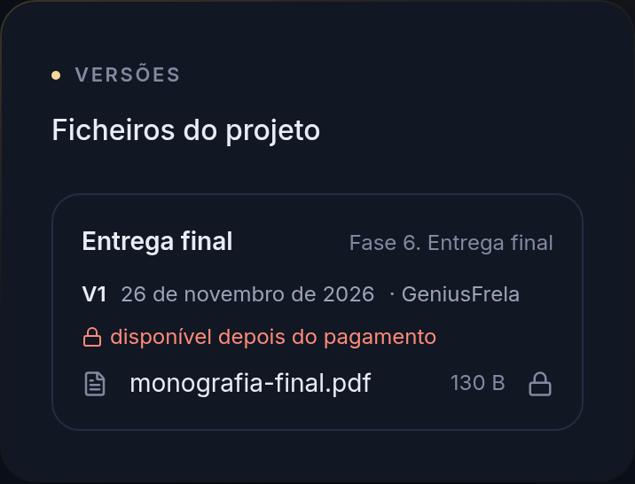
Antes: bloqueada até ao pagamento
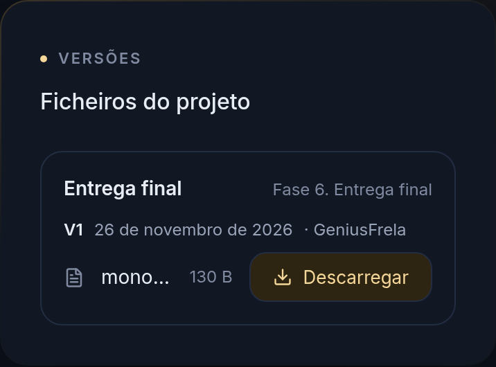
Depois: "Descarregar"
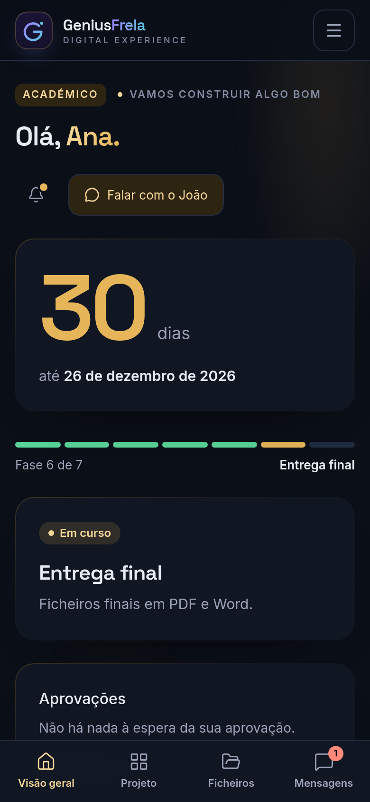
Fase 6 de 7 · Entrega final
10 · Pedir ajustes
Depois da entrega, a contagem passa a mostrar os dias que tem para pedir ajustes. Leia o trabalho com calma e diga-nos o que corrigir.
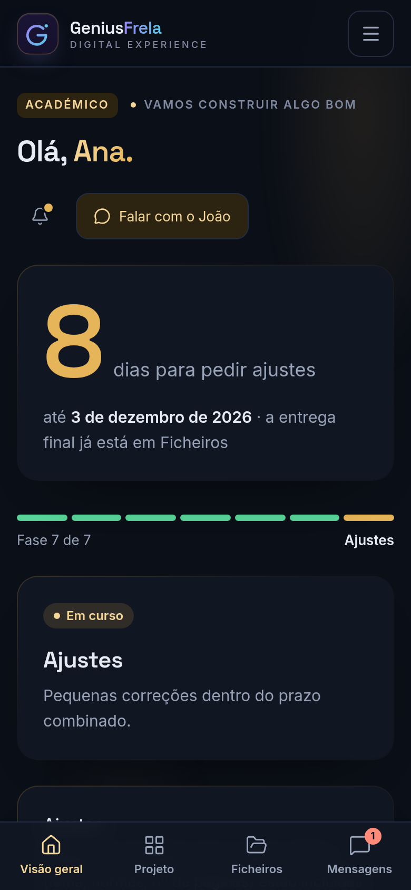
"8 dias para pedir ajustes"
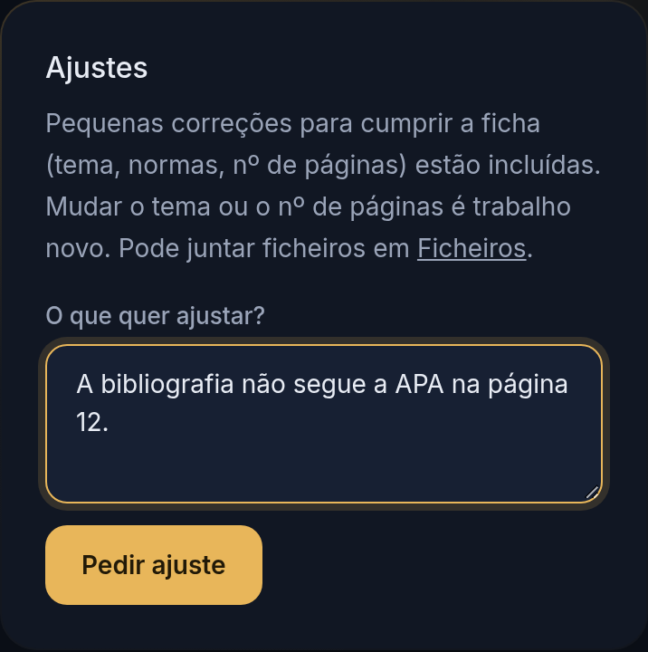
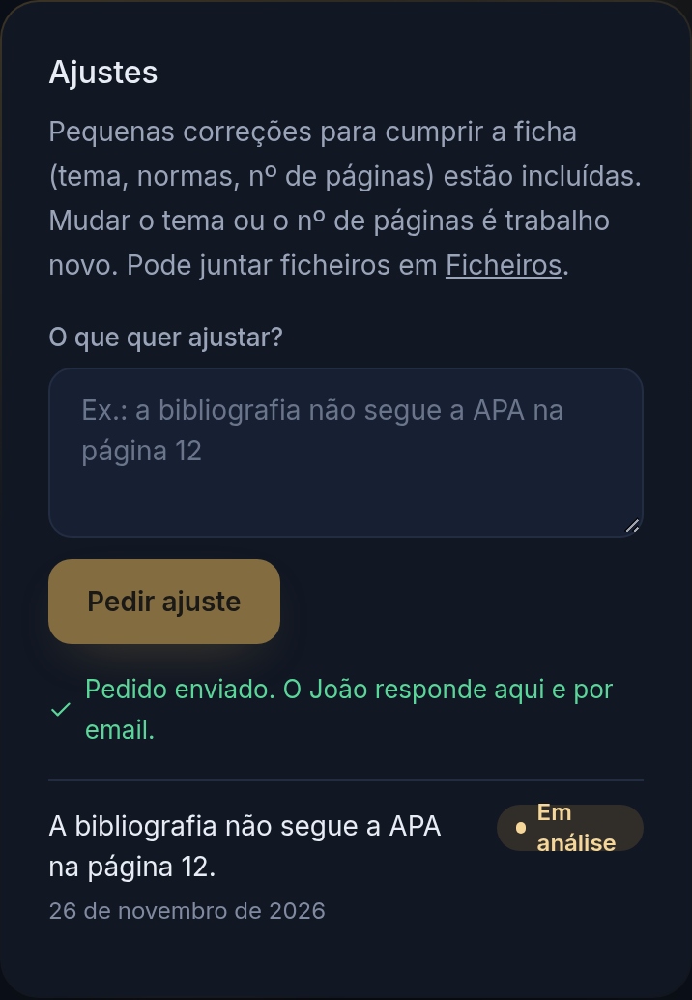
O pedido enviado, "Em análise"
Correções para cumprir a ficha: tema, normas e número de páginas. Mudar o tema ou o número de páginas é trabalho novo, com um orçamento à parte.
Terminado o prazo, o projeto conclui-se sozinho. Para mais alguma coisa, fale connosco nas Mensagens.
11 · Mensagens e horário
As Mensagens guardam toda a conversa sobre o seu trabalho, ligada à fase certa. Assim nada se perde entre o WhatsApp e o email.
Todos os dias, das 8h às 20h (hora de Luanda). Pode escrever a qualquer hora: fora do horário, o portal avisa "Entraremos em contacto assim que o horário de abertura estiver disponível."
Para um link de acesso novo ou um assunto urgente: +244 957 392 400. No portal, o botão "Falar com o João", no topo, abre as Mensagens.
A conversa, com o assunto de cada mensagem
12 · Perguntas frequentes
Não. O portal abre no browser do telemóvel ou do computador.
Toque em "Pedir um link novo no WhatsApp" ou escreva-nos. Cada link funciona uma vez e vale 24 horas.
Fora do portal, como combinámos. O João regista o pagamento e o portal atualiza-se: o estado passa a "Pago".
Enquanto esperamos por si (uma aprovação ou um pagamento), o prazo desliza os mesmos dias. O portal mostra a nova data e o motivo.
Uma aprovação não se desfaz no portal. Escreva-nos nas Mensagens: o João pode reabrir o pedido.
O portal mostra o índice e o progresso dos capítulos. O trabalho completo chega na entrega final.
Se tiver cadeado, falta o pagamento do restante. Se o link expirou (15 minutos), toque outra vez em "Descarregar".
O botão deixa de aparecer; fale connosco nas Mensagens e vemos caso a caso.
Só a sua conta vê o seu projeto. Os ficheiros ficam num armazenamento privado e só se descarregam por links temporários.
Troque de projeto no cartão do projeto, no topo do menu.
Escreva-nos nas Mensagens do portal ou pelo WhatsApp +244 957 392 400. Todos os dias, das 8h às 20h.